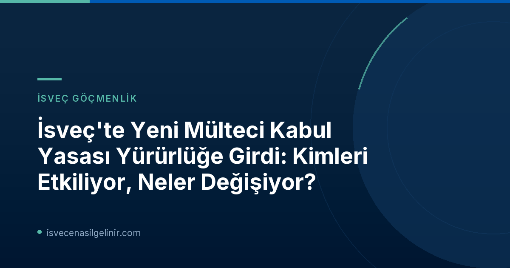

İsveç'in Yeni Mülteci Kabul Yasası (Mottagandelag) Nedir?
İsveç'te 1 Ekim 2026 tarihinden itibaren yürürlüğe giren "Ny mottagandelag" (Yeni Mülteci Kabul Yasası), sığınmacıların ve diğer ilgili kişilerin kabul süreçlerini düzenleyen köklü değişiklikler getiriyor. Bu yeni yasa, daha önce yürürlükte olan "Lagen om mottagande av asylsökande m.fl. (LMA)" (Sığınmacı ve Benzerlerinin Kabulü Hakkında Kanun) yerine geçmektedir.
Yeni düzenleme ile birlikte, Migrationsverket'in (İsveç Göçmenlik Ofisi) kabul ve barınma hizmetlerinden faydalanabilecek kişi sayısı artırılmış ve bazı kişilerin bu kapsamda kalma süresi uzatılmıştır. Özellikle, hakkında geri dönüş kararı bulunan ve bu kararın yasal kesinlik kazanmış veya gönüllü ayrılış süresi dolmuş kişiler dahi, belirli durumlarda kabul yasası kapsamında kalmaya devam edebileceklerdir. Ayrıca, daha önce kabul merkezlerinden kaydı silinen kişilerin tekrar sisteme dahil olma imkanları genişletilmiştir.
Yeni Mottagandelag Temel Özellikleri
- Yürürlük Tarihi: 1 Ekim 2026
- Eski Yasanın Yerine Geçmesi: LMA Yasası'nın yerini alıyor.
- Kapsam Genişlemesi: Daha fazla kişi yasa kapsamına alınıyor ve bazı kişiler için kapsamda kalma süresi uzuyor.
- Geri Dönüş Kararı Olanlar: Kesinleşmiş geri dönüş kararı veya gönüllü ayrılış süresi dolanlar da belirli şartlarda kapsamda kalabilir.
- Yeniden Kapsama Alma: Daha önce çıkarılan kişilerin tekrar sisteme dahil olma olasılığı artırıldı.
Bölge Kısıtlamaları ve Kontrol Tedbirleri: Yeni Düzenlemeler
Yeni yasa ile uluslararası koruma (iltica) başvurusunda bulunanlar ve hakkında geri dönüş kararı olanlar için ikamet ve hareket serbestisi konusunda önemli kısıtlamalar getirilmiştir.
Bölge Kısıtlamaları
Uluslararası koruma başvurusunda bulunan kişilerin, Migrationsverket tarafından kendilerine tahsis edilen yerde ikamet etmeleri zaten birincil kuraldı. Ancak 1 Ekim'den itibaren, uluslararası koruma başvurusunda bulunan ve geri dönüş kararı olan kişilerin, kural olarak, tahsis edilen konaklama yerlerinin bulunduğu il (län) sınırları içinde kalmaları zorunluluğu getirilmiştir. Bu, kişilerin belirli bir coğrafi alana bağlı kalmaları gerektiği anlamına gelmektedir.
Fiziksel Hazırlık Kontrolleri ve Bildirim Yükümlülüğü
Migrationsverket'in kabul ve geri dönüş merkezlerinde "närvarokontroller" (fiziksel hazırlık kontrolleri) uygulaması başlatılmıştır. Merkezlerde kalan ve 16 yaşını doldurmuş, uluslararası koruma başvurusunda bulunan kişilerin Pazartesi, Çarşamba ve Cuma günleri bu kontrollere katılmaları zorunlu hale gelmiştir. Geri dönüş kararı olan kişiler için ise "anmälningsskyldighet" (bildirim yükümlülüğü) getirilmiş olup, kural olarak haftada üç gün Migrationsverket'e bildirimde bulunmaları gerekmektedir. Bazı durumlarda Migrationsverket, bireysel bazda başka kontrol tedbirleri de uygulama yetkisine sahip olacaktır.
Ukrayna Vatandaşları İçin İstisnalar
Toplu Akın Direktifi kapsamında geçici koruma altında bulunan Ukrayna vatandaşları, yukarıda bahsedilen bölge kısıtlamalarından ve fiziksel hazırlık kontrollerinden muaf tutulmuştur.
| Düzenleme | Kapsam | Detaylar |
|---|---|---|
| Bölge Kısıtlaması | Uluslararası Koruma Başvurusu Yapanlar ve Geri Dönüş Kararı Olanlar | Tahsis edilen konaklama yerinin bulunduğu il (län) içinde kalma zorunluluğu. |
| Fiziksel Hazırlık Kontrolleri | 16 Yaş Üzeri Uluslararası Koruma Başvurusu Yapanlar (Merkezlerde Kalanlar) | Pazartesi, Çarşamba ve Cuma günleri Migrationsverket merkezlerinde zorunlu katılım. |
| Bildirim Yükümlülüğü | Geri Dönüş Kararı Olanlar | Haftada üç gün Migrationsverket'e bildirimde bulunma zorunluluğu. |
| Ukrayna Vatandaşları | Toplu Akın Direktifi Kapsamındaki Geçici Koruma Sahipleri | Bölge kısıtlaması ve fiziksel hazırlık kontrollerinden muaftır. |
Günlük Ödenek (Dagersättning) Kurallarında Değişiklikler
Yeni mülteci kabul yasası ile günlük ödenek (dagersättning) konusunda da önemli değişiklikler yapılmıştır. Halihazırda belirli yükümlülükleri yerine getirmeyen kişilerin günlük ödeneklerinde kesinti yapılabiliyorken, yeni yasa ile ödeneğin tamamen veya kısmen azaltılabileceği durumlar artırılmıştır.
Bu durumlara örnek olarak, bölge kısıtlamasına uyulmaması, bildirim yükümlülüğünün ihlal edilmesi veya Migrationsverket konaklama merkezlerinde ciddi suistimalde bulunulması sayılabilir. Ayrıca, Migrationsverket'e yanlışlıkla ödenen günlük ödeneklerin geri talep edilmesi yetkisi de getirilmiştir. Bu değişiklikler, sığınmacıların ve diğer yasa kapsamındaki kişilerin yükümlülüklerine daha sıkı uymalarını sağlamayı hedeflemektedir. Güncel göçmenlik kanunları ve İsveç yaşamı hakkında daha fazla bilgi için sverigemedborgarskapsprov.com ile ilgili sitemizi ziyaret edebilirsiniz.
Çalışma Hakkının Sınırlandırılması (AT-UND)
1 Ekim'den itibaren, uluslararası koruma başvurusunda bulunan kişilerin İsveç işgücü piyasasına erişim koşulları da değiştirilmiştir. Daha önce "AT-UND" (çalışma izni gerekliliğinden muafiyet) olarak bilinen bu uygulama için yeni bir ana kural getirilmiştir. Buna göre, bir kişi ancak Migrationsverket başvurunun kaydedilmesinden itibaren altı ay içinde karar vermediyse çalışma hakkı elde edebilir. Bu gecikmenin başvuru sahibinden kaynaklanmaması ve diğer koşulların da yerine getirilmesi gerekmektedir.
Bu yeni kurallar, Ukrayna'dan gelen ve Toplu Akın Direktifi kapsamında geçici koruma altında olan kişileri veya halihazırda AT-UND'ye sahip olan kişileri etkilemeyecektir. Mevcut AT-UND sahipleri, kural olarak bu haklarını koruyacak ve çalışmaya devam edebileceklerdir.
Belediyelerin Sorumlulukları Netleşiyor
Yeni kabul yasası, Migrationsverket ile belediyeler arasındaki sorumluluk dağılımında da değişiklikler ve netleştirmeler getirmiştir. Belediyelerin, yasa kapsamındaki kişilere yönelik konaklama desteği ve özel barınma biçimleri konusundaki sorumlulukları daha belirgin hale getirilmiştir. Bu, örneğin Migrationsverket'e ait bir merkezde yaşayan bir kişiye evde bakım hizmeti sunulması gibi durumları içerebilir. Ayrıca, olağanüstü durumlarda, çok sayıda kişinin koruma arayışında olduğu zamanlarda belediyelerin barınma sorumluluklarına ilişkin kurallar da getirilmiştir.
Referanslar:
- Migrationsverket Resmi Duyurusu: Ny mottagandelag börjar gälla den 1 oktober
İsveç Göçmenlik Süreçleri Hakkında Daha Fazla Bilgi Edinin
İsveç'teki yaşam, çalışma ve vatandaşlık süreçleri hakkında güncel ve doğru bilgilere ulaşmak için kaynaklarımızı inceleyin.